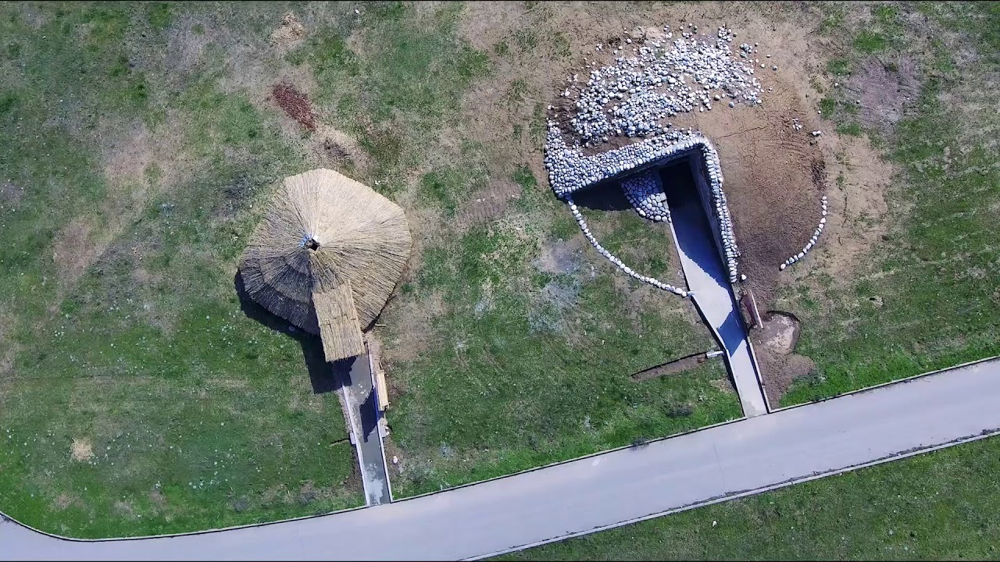

Saka Burial Mounds – Ancient Tombs of the Great Steppe
The Saka burial mounds are unique archaeological monuments from the Saka era (7th–3rd centuries BC). These ancient tombs revealed golden ornaments, weapons, and artifacts that reflect the high culture of the nomadic peoples of Kazakhstan.
- Age: Over 2,500 years
- Location: Zhetysu, Almaty Region
- Famous discovery: The “Golden Man†– symbol of Kazakhstan
What to See?
- 🺠Issyk Kurgan – the site where the “Golden Man†was found
- 🏞 Berel Mounds – ancient Saka tombs in East Kazakhstan
- 🕠Tamgaly-Tas – petroglyphs and Saka rock carvings
What to Do?
- 📸 Take photos against ancient burial mounds
- 🔠Explore the history and archaeology of the Great Steppe
- 🚙 Take tours and excursions to Saka heritage sites
How to Get There?
📠Issyk Kurgan: 50 km from Almaty, toward Talgar
🚗 By car: 1 hour via the Almaty–Issyk highway
🚌 Tours: organized from Almaty
Opening Hours & Prices
🕒 Access: open any time
💰 Admission: free, guided tours from 3,000 KZT
The Saka burial mounds are living testimony to the rich history and culture of Kazakhstan’s nomadic heritage! 🏺✨
PHOTOS

